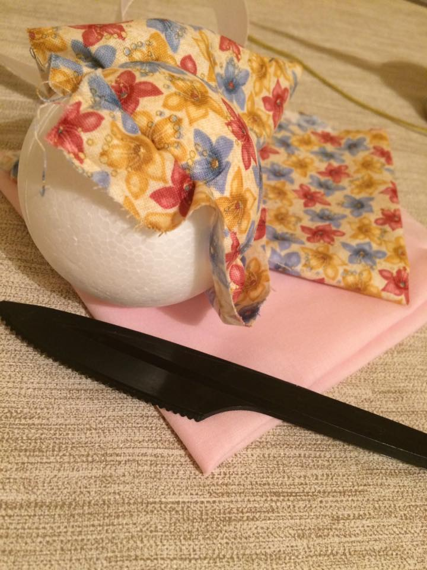
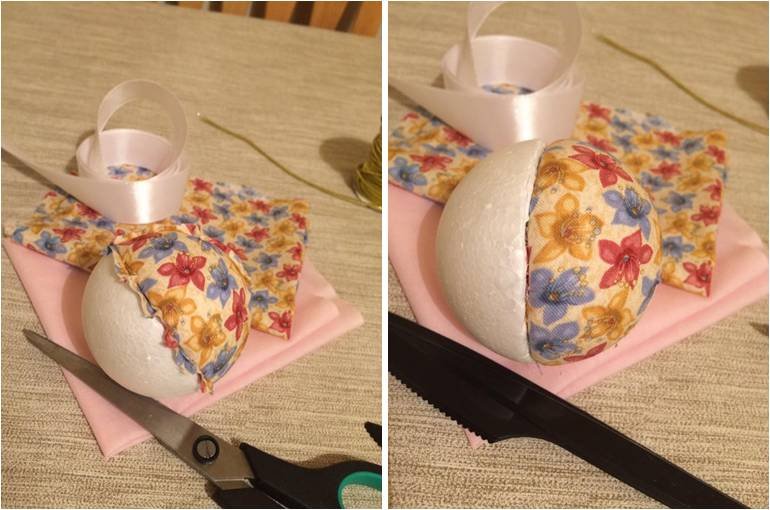
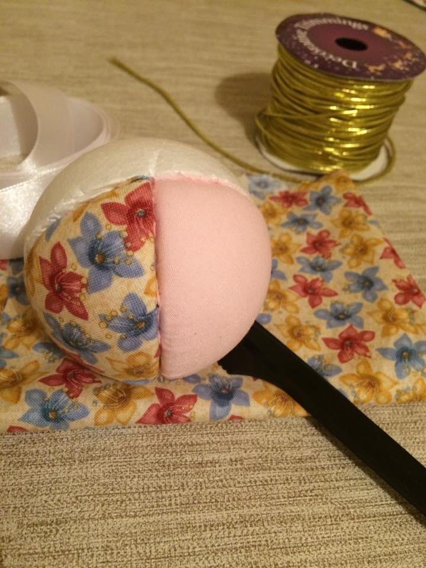
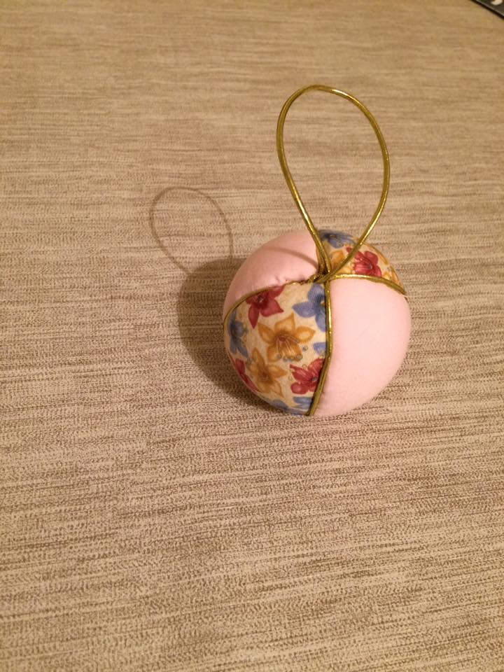

Crafted Christmas
Patchwork Baubles
The baubles are an essential item to decorate your Christmas tree.
If you want to innovate and try new styles other than the traditional laminated plastic ones, try these cute patchwork ornaments.
Besides looking pretty they're also easy to make and you can use any type of material (as long as it fits inside the crack in the styrofoam).
Any small pieces of material will do. Dress you Christmas tree to impress!

You will need: * Styrofoam balls * Pieces of fabric * Ribbons * Scissors * A plastic knife * A cutter
Start by tracing the ball vertically in segments with a pen. Next, slide the cutter over the traces cutting the ball just enough to put in the fabric. Position the piece of material over one sliced segment. The material has to have an remnant piece to be cut after you insert it into the ball. Put in the fabric in the gap with the help of the plastic knife.

Cut the excess fabric and finish fitting it into the gap.

Do the same with the other segments until all the ball is filled.

Use a decorative string to cover the gaps and to make the loop for hanging the bauble on your Christmas tree.

You can also make a beautiful bow to put on top of the ball with the aid of a pin (just watch out for the kids!) or even add some shine with dots of glitter glue.